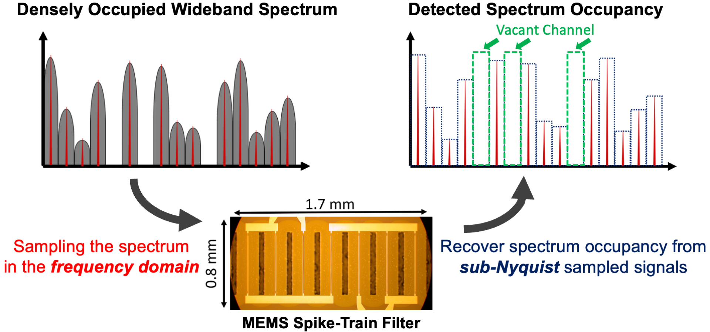

Hi, I’m Junfeng (Jayden) Guan
I am a postdoctoral researcher in the Laboratory of Sensing and Networking Systems (SENS) at École Polytechnique Fédérale de Lausanne (EPFL), working with my PhD advisor Prof. Haitham Hassanieh.
I received my PhD from the Electrical and Computer Engineering Department at University of Illinois Urbana-Champaign (UIUC), where I was a member of the Systems & Networking Research Group (SyNRG).
My research interests are in the area of wireless sensing and networking systems, including radar perception for autonomous vehicles, millimeter-wave networks, and Joint Communictions and Sensing Systems (JCAS), as well as machine learning for wireless and radar data.
Updates
Our paper "Bootstrapping Autonomous Radars with Self-Supervised Learning" has been accepted to CVPR'24.
Our tutorial proposal "Introduction to 4D Radar: Hardware, MIMO, Signal Processing, Dataset, and Neural Network" has been accepted to IV'24.
I presented our paper "Exploiting Virtual Array Diversity For Accurate Radar Detection" at ICASSP'23 in Rhodes, Greece.
I'm hornored to attend the Dagstuhl Seminar on "Novel Scenarios for the Wireless Internet of Things".
I started my new role as Postdoctoral Researcher at EPFL, Switzerland.
Education
University of Illinois Urbana-Champaign, 2017-2022
Doctor of Philosophy
Electrical and Computer Engineering
Advisor: Haitham Hassanieh
Dissertation: High-Performance Wireless Perception Using Deep Learning and MEMS Devices
University of Illinois Urbana-Champaign, 2013-2017
Bachelor of Science
Electrical Engineering
Undergraduate Thesis Advisor: Songbin Gong
Selected Research Projects
Millimeter-Wave Radar Perception
Bootstrapping Autonomous Radars with Self-Supervised Learning
,
,
J. Guan,
,
, and
* co-primary first authors
CVPR 2024

MEMS Spike-Train Filter Enhanced Wireless Sensing and Localization


Joint Communication and Sensing in mmWave 5G/6G Networks
 3D Imaging Using Millimeter Wave 5G Signal Reflections
3D Imaging Using Millimeter Wave 5G Signal Reflections
J. Guan,
,
, and
IEEE TMTT 2021 / Paper
3D Imaging using 5G Signals
J. Guan,
,
, and
RFIC 2020 / Paper
Best Industrial Paper Finalists
Acoustic Internet of Things
, , J. Guan, , , and
* co-primary first authors
CVPR 2024
Joint Communication and Sensing in mmWave 5G/6G Networks
3D Imaging Using Millimeter Wave 5G Signal Reflections
J. Guan,
,
, and
IEEE TMTT 2021 / Paper
3D Imaging using 5G Signals
J. Guan,
,
, and
RFIC 2020 / Paper
Best Industrial Paper Finalists
Acoustic Internet of Things
J. Guan, , , and
IEEE TMTT 2021 / Paper
3D Imaging using 5G Signals
J. Guan, , , and
RFIC 2020 / Paper
Best Industrial Paper Finalists
Experience
Teaching Experience
Communication Networks (ECE 438 UIUC), Aug. 2019 - Dec. 2019Teaching Asistant
Communication System Laboratory (ECE 463 UIUC), Aug. 2018 - Dec. 2018
Laboratory Teaching Asistant
Industry Experience
Nokia Bell Labs, Jun. 2021 - Aug. 2021Radio Systems Bell Labs Summer Intern
Murray Hill, New Jersey (Remote)
IBM Research, May. 2019 - Aug. 2019
Graduate Research Intern
IBM Thomas J. Watson Research Center, New York
Misc.
ConfSearch: A conference search tool for computer science conferences.
Connected Papers: Explore connected papers in a visual graph.